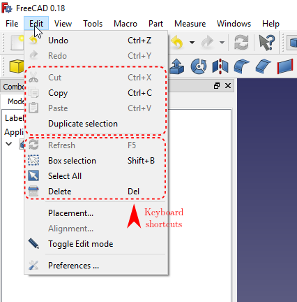

Copying Objects/cs
Overview
Přehled
Prostředky k duplikování objektů (odstavců, buněk tabulkových kalkulátorů, obrázků, atd.) jsou k dispozici u mnoha aplikací. FreeCAD není výjimkou. Objekty Dokumentu mohou být libovolně kopírovány uvnitř dokumentu nebo mezi dokumenty použitím Kopírovat, Vložit a příkazem Duplikovat výběr.
Kopírování propojených objektů
Objekty Dokumentu mohou být propojeny na jiné objekty (např. deska může být propojena se svým náčrtem a Fusion feature je propojena s svými komponentními objekty). To znamená, že stejně musí být postaráno i o kopírované objekty.
{kind=link}

Please consider that the copy-pasted objects are not dependent on the original. If you want dependent clones please use  Draft Workbench's Clone or
Draft Workbench's Clone or  Part Design Workbench's Clone. If you need neither a dependent clone nor a parametric replica, you may also use
Part Design Workbench's Clone. If you need neither a dependent clone nor a parametric replica, you may also use  Part Workbench's Simple Copy. For patterned clones, please look into the Other Methods section of this page.
Part Workbench's Simple Copy. For patterned clones, please look into the Other Methods section of this page.
Copying Linked Objects
If an object to be copied has links to object(s) not in the selection, FreeCAD will ask if the unselected objects should be included in the copy operation.
Finding and Positioning Pasted Object(s)
Obecně doporučovaná praxe je při kopírování rodičovského objektu vybrat všechny závislé objekty.
Hledání a pozicování vkládaných objektů
Po operaci Kopírovat/Vložit nemusí být zřejmé kde jsou zkopírované objekty v okně dokumentu umístěny. Je to proto, že nový objekt má stejnou vlastnost Umístění jako měl originál. Přepnutím vlastnosti Viditelnost (mezerníkem) skryjete originál. Potom použijete dialog Umístění abyste přesunuli nový objekt na jeho správnou pozici.
Other Methods
Další metody
Jako mnoho věcí ve FreeCADu, je mnoho způsobů jak vytvořit kopii. Pro další inspiraci se podívejte na:
- Návrh dílu: Zrcadlo, Lineární vzor, Polární vzor, MultiTransformace
- Díl: Zrcadlo
- Výkres: Pole,Klon
Poznámky
- Ve verzi v0.14+, jestliže nějaký kopírovaný objekt je propojen s objektem, který není kopírován, FreeCAD se zeptá jestli by nevybraný objekt neměl být také zahrnut do kopírování.
- Getting started
- Installation: Download, Windows, Linux, Mac, Additional components, Docker, AppImage, Ubuntu Snap
- Basics: About FreeCAD, Interface, Mouse navigation, Selection methods, Object name, Preferences, Workbenches, Document structure, Properties, Help FreeCAD, Donate
- Help: Tutorials, Video tutorials
- Workbenches: Std Base, Assembly, BIM, CAM, Draft, FEM, Inspection, Material, Mesh, OpenSCAD, Part, PartDesign, Points, Reverse Engineering, Robot, Sketcher, Spreadsheet, Surface, TechDraw, Test Framework
- Hubs: User hub, Power users hub, Developer hub